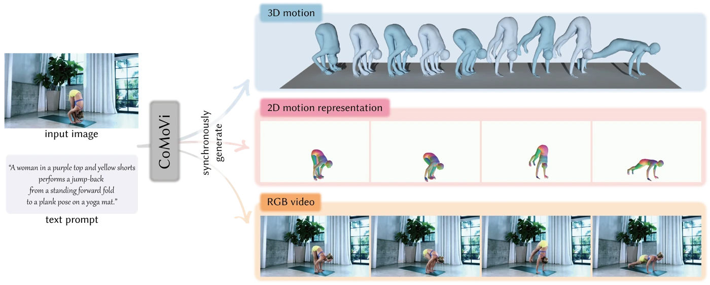

CoMoVi: Co-Generation of 3D Human Motions and Realistic Videos
Coupling human motion and video generation within a single diffusion denoising process.
BibTeX
@article{zhao2026comovi,
title={CoMoVi: Co-Generation of 3D Human Motions and Realistic Videos},
author={Zhao, Chengfeng and Shu, Jiazhi and Zhao, Yubo and Huang, Tianyu and Lu, Jiahao and Gu, Zekai and Ren, Chengwei and Dou, Zhiyang and Shuai, Qing and Liu, Yuan},
journal={arXiv preprint arXiv:2601.10632},
year={2026}
}